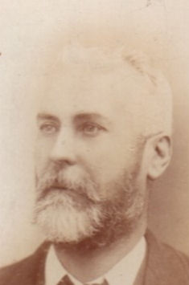

Preserved family history
A record of the Freebody family, carried forward.
Explore historical people, places and relationships from Graham Freebody’s family-history research. This public edition includes records with explicit death evidence, together with Graham as its original author.
228 public people99 public family groupsPrivacy filtered

Explore the archive
Research made accessible without publishing private family data.
Graham’s introductionThe original account of how the research and website began.
PeopleAn alphabetical directory of reviewed public records.
FamiliesRelationships among people eligible for this public edition.
Family treeFollow ancestors and descendants through an interactive lineage view.
SearchFind names, dates and places entirely within this static site.
Publication policyWhat is included, what is withheld and why.
About the archiveHow the original work is preserved and carried forward.